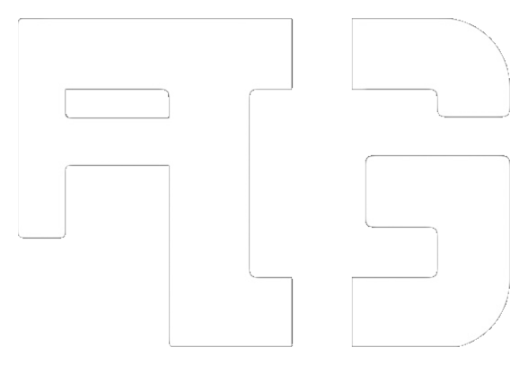

FG STUDIO
GLOBAL VIDEO SERVICE六種溝通情境SIX COMMUNICATION SCENARIOS
GVSBRAND FILM形象影片

CUSTOMER SERVICE
01 SINGLE
單支製作
先從一支開始，
確認風格與合作方式。
每支起NT$2,000
- 你提供影片與照片素材
- 每支作品最多修改兩次
- 品牌試做：1–3 支付費試做
02 LONG-TERM主推
VIP
每月 15 支，
多支一起做更划算。
月費專屬報價
- 簽約至少三個月，優先排程，月結
- 1080p、字幕、客製化調色
- 正式合約，NDA 可選
03 DOUBLE
VIP DOUBLE
VIP 的加倍版本，
每月最多 30 支。
月費專屬報價
- 可沿用既有素材與版型延伸
- 簽約至少三個月，優先排程，月結
- 正式合約，NDA 可選
此裝置不支援 WebGPU，顯示靜態版本
BEYOND
THE FRAME.
先理解你的品牌，再說好你的故事。
01 — GLOBAL VIDEO SERVICE
GVS
為品牌、企業與學校提供長期影像製作。先了解產業與受眾，對齊品牌方向，再依溝通情境製作。
02 — SIX SCENARIOS
六種溝通情境
一支影片，解決一個溝通任務：品牌介紹、產品說明、客服與常見問題、教育訓練、校園政策與活動、社群宣傳。點牆上任一格看範例。
03 — GVS OPERATIONS
GVS OPERATIONS
結合專業影像製作，為品牌呈現更具質感的影像內容。
04 — CONTACT
CUSTOMER SERVICE
聊聊你想說清楚的事：你的品牌、想觸及的受眾，以及希望影像達成的目標。
正式合約 · NDA 可選 · 作品是否公開由你決定
SCROLL